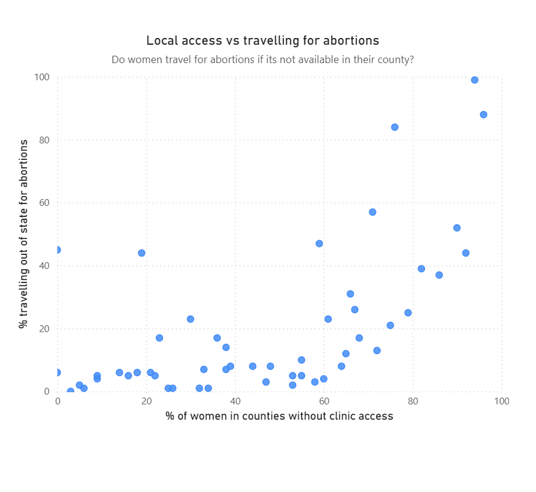
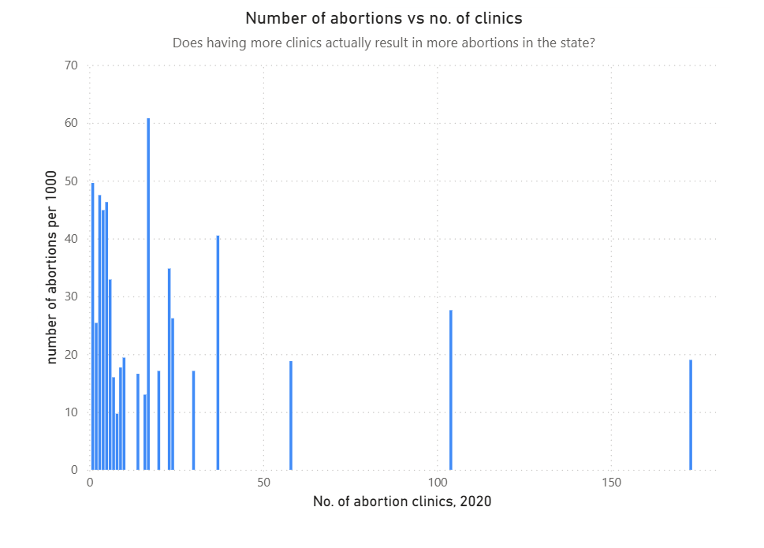

Proposition: Increasing access to abortion clinics reduces travel burden and lowers abortion rates.
States with fewer clinics see higher travel rates.
Score: 2.0
Even with fewer clinics, abortions continue via alternative means.
Score: 0.5
Score: -1
Score: -1.5
Working on both pro and counter-visualizations highlighted how subtle design choices affect interpretation. Using axis scales, percentages, and annotations can make the same dataset tell very different stories. This experience emphasized that ethical visualization is not just about avoiding outright lies but providing context, transparency, and clarity while acknowledging how visual cues influence perception.
Persuasion is a natural part of visualization, but it crosses into misleading when viewers are not given enough context or when small differences are exaggerated. For example, truncating axes or over-smoothing trends can dramatically change takeaways. Acceptable persuasive choices are those that remain truthful and transparent, while still guiding the reader to understand key insights.
Data source: Guttmacher Institute Abortion Data by U.S. State (2017–2020). Transformations include percentage calculations, basic sorting, and creation of derived measures for out-of-state travel. Figures include annotations and subtitles to emphasize key insights.